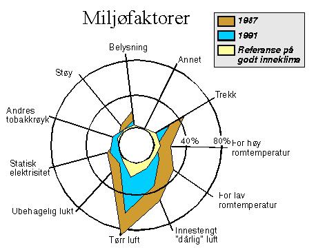
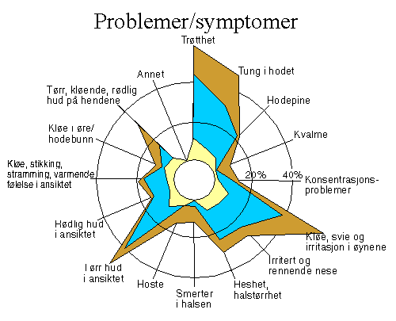

![[Forrige artikkel]](/me/ts/ne/gifs/prev.gif)
![[NE hjemmeside]](/me/ts/ne/gifs/ne-small.gif)
![[Neste artikkel]](/me/ts/ne/gifs/next.gif)
Av Egil Wettre-Johnsen
Syke hus kan først friskmeldes når det store flertallet av dem som arbeider der er fornøyde og ikke lenger mener at de får noen plager av å oppholde seg på arbeidsplassen. Mennesket selv er et mye bedre måleverktøy enn all verdens tekniske instrumenter.
Mye ny innsikt og viten kom frem da norske og svenske inneklimaeksperter og klimarenovatører nylig møttes på en spesialkonferanse i Skellefteå, nord i Sverige. Til våren vil konferansen bli fulgt opp med en tilsvarende på Lillehammer.
Grunnen til at Skellefteå er kommet så langt i arbeidet med å sanere syke hus, er at det på et tidlig tidspunkt ble etablert et nært og tverrfaglig samarbeid mellom vitenskapsfolk, helsepersonell og tekniske eksperter. Uten et slikt samarbeid ville det vært umulig å forstå sammenhenger og finne frem til kostnadseffektive og fornuftige løsninger. De ulike faggruppene har latt prestisjen falle og heller trukket sammen mot et felles mål om å få ryddet opp i problemene. Men under marsjen - som fortsatt pågår, har det også vært mange faglige nappetak!
-Tidligere drev vi å målte og målte uten å finne noe særlig. Først etter at vi begynte å rive og bryte opp, har vi funnet årsakene til problemene. Det er også slik at det ikke finnes noe bedre måleinstrument enn den menneskelige nesetippen, sier Skellefteås eiendomssjef Håkan Högdahl til Nærings-Eiendom.
I Skellefteå har de skåret i gjennom denne håpløse debatten med konsekvent å gjennomføre spørreundersøkelser blant ansatte og brukere av bygg. På denne måten får man kartlagt eventuelle utslag og får registrert eventuelle endringer over tid. Først etter at det er avdekket unormaliteter og sykdomssymptomer utover det normale, kommer den tekniske ekspertisen tungt inn i bildet for å gi sine bidrag til å rette opp forholdene.
Skellefteås bedriftslege Åke Østlund opplyste på konferansen at de første gang ble klar over syke hus-syndromet i 1986 da en tredjedel av de ansatte på et servicehus var sykmeldte med den intetsigende diagnosen . Legen fant ikke på noe bedre, men kunne samtidig konstatere at de sykmeldte frisknet til når de ikke lenger oppholdt seg på arbeidsplassen.
-Vi må respektere slike symptomer. Dersom intet gjøres vil personene etterhvert bli kronifiserte og arbeidsuføre. Det har sammenheng med at toleransegrensene for påvirkning av skadelige stoffer stadig blir lavere etterhvert som tiden går. Man blir sensitivsert og stadig mer overfølsom. Nye terskler passeres. Derfor snakker vi om såkalte terskeleffekter, påpeker Østlund.
Et typisk fenomen når man ikke finner utslag på tekniske måleinstrumenter, er at man avviser problemet og tar i bruk psykologiske overtalesesmetoder for å overbevise de ansatte om at det ikke er noe galt med bygget. Mange havner i denne fellen. I ettertid vil det etterhvert vise seg at personalet likevel har rett. I mellomtiden er ansatte påført lidelser og virksomheten er påført effektivitetstap. Syke hus-syndromet er et inneklimaproblem der det kreves både medisinsk og teknisk kompetanse for å rette opp forholdene.
-Ofte opplever vi at lokalene ser fine ut. De har ingen synlige feil og
mangler. Men syke hus er et humant problem, og måles ikke etter tekniske
variabler, påpeker han overfor Nærings-
Eiendom.
For å gardere seg mot syke hus-syndromet, er det enkelte tiltak som bør vies oppmerksomhet ved rehabilitering og nybygging:
1) Sikring og gardering mot all fukt.
2) Anvend sikre og kjente materialer.
3) Unngå dårlige materialkombinasjoner.
4) Bruk tilpassede teknikker.
5) Bruk lav-emitterende materialer.
6) Sørg for optimal ventilasjon og systemer som er enkle, driftssikre og lette å vedlikeholde.
7) Ikke resirkulere luften fordi roterende varmegjenvinnere øker tilførselen av VOC-gasser.
En advarsel til eiendomsbesittere som nedlegger mye penger i renovering: Fordi de ansatte er blitt sensitivisert på grunn av langvarig VOC-påvirkning, går toleranseterskelen ned. Det er derfor svært frustrerende for de som har brukt millioner på saneringstiltak, når klagene er like mange selv etter at inneklimaet er forbedret med 30-50 prosent.
Når det gjelder Tarketts egne produkter er det arbeidet mye med å få redusert avgassingen (emisjon). Generelt er emisjonen siden 1991 redusert med rundt 50 prosent - en innsats få andre produsenter har klart å følge.
-God helse krever tørre hus. Sammenhengen mellom fukt i konstruksjonen og dårlig helse er helt uomtvistelig, fastslo direktør Christer Vahlberg i EverSeal AB på konferansen.
Han understreket bl.a. at blærer i gulvbelegg ikke skyldes lufttrykk, men at blærene er forårsaket av fukt. Selv om det er flere meter med sprengstein under byggets platting, kan det likevel oppstå fuktproblemer på grunn av kondens. Med å presse glass 1-3 centimeter ned i betongen tettes 95-98 prosent av transport-porene i betongen. Resultatet av denne vannglass-metoden er forbløffende: Alkaliteten senkes til under en ph på 11 og den relative fuktigheten (RF) garanteres å bli lavere enn 85 prosent.
Betong er intet uskyldig materiale. Han refererte til norske betongprodusenter som påstår at det bare kommer vanndamp fra betong og at vanndamp er luktfri. Dette er bare tull. I moderne betong tilsettes det inntil 17 kilo med tilsettingsstoffer pr. kubikkmeter betong. Særlig de hurtigtørkende typene får tilsettinger. Dessuten lukter betong på grunn av tilsettingsstoffene.
Til dette repliserte Gaute Flatheim: Det er riktig at betong lukter. Hva har de puttet i den?
Syke hus-syndromet ble første gang definert av verdens helseorganisasjon (WHO) i 1982. Syndromet kjennetegnes av følgende triologi:
1) Opplevelser av dårlig inneklima.
2) Allmenne og/eller diffuse symptomer.
3) Hud- og slimhinnereaksjoner.
Opplevelsesfaktoren består mer spesifikt av følgende elementer:
luft, opplevelse av innestengt luft, dårlig luft og lukt.
De allmenne eller diffuse symptomene, kan omfattes av:
Unaturlig tretthet, mental tretthet, hodepine, følelse av å være tung i hodet, dårlig allmenntilstand, usselhetsfølelse, leddproblemer, mave- og tarmbesvær, muskelsmerter etc.
Hud- og slimhinnereaksjonene kjennetegnes ved følgende:
Øyne: Tørrhet, grusfølelse, øket tåreproduksjon, svette, kløe, røde øyne og oppsvulmet øyelokk.
Nesen: Tørr nese, tett nese, neseblod, sår- og skorpedannelser, opphovning, rødhet.
Munn/svelg: Tørrhet, klebende slimhinner, dårlig smak, belegg på tungen, svie, klumpfølelse.
Nedre luftveier: Hoste, heshet, bronkitt, astma.
Huden: Rødsmusset, tørrhet, stram hud i ansiktet, oppsvulming rundt øynene, sprekkdannelser på hendene, kløe, nupper, håndeksem, etc.
Ved mistanke om at noe ikke er som det skal, er det fast prosedyre i Skellefteå å gjennomføre en spørreundersøkelse blant dem som arbeider i bygget. Det spørres om miljøfaktorer (øverst) og om symptomer (nederst). De tre verdiene i figurene går henholdsvis på svar før saneringstiltak, svar etter sanering og hvordan svarprosentene vil slå ut i et normalt bygg uten inneklimaproblemer.
Opplevelse av tørr luft, innestengt luft og trekk, er de miljøfaktorer som gir sterkest symptomutslag. Når det gjelder opplevde symptomer er utslagene særlig sterke når det gjelder tretthet, kløe/svette/irritasjon i øynene, tørr ansiktshud og tung i hodet.


Myndighetene har satt grenser for slike konsentrasjoner, men erfaringene fra Skellefteå viser at disse er inadekvate. Mange steder ble det målt konsentrasjoner godt under grenseverdiene, men likevel ble folk syke. Problemet er derfor svært sammensatt og komplekst, og kan også relateres til hvilke organiske forbindelser som forekommer.
Det forekommer avgassing (VOC) fra alle materialer og stoffer. For å unngå syke hus-syndrom og bygningsrelaterte sykdommer (BRI), er det nødvendig å få redusert VOC-avgassingen til et minimum. Derfor er bud nummer en å unngå enhver form for fuktighet. Fukt er nemlig hovedårsaken til at stoffer og materialer dramatisk øker avgassingen, eller emisjonen som det heter på fagspråket. I kjølvannet av fuktighet oppstår også mugg og sopp som avgir sporer. I tillegg til VOC, er slike sporer de viktigste årsakene til at folk blir syke over lang tids eksponering.
De mest sentrale VOC-stoffene som nå er identifisert og knyttet til syke hus-syndromet, er:
1) 2-etylhexanol. Dette forekommer ofte i hus med fuktig betong og linoleum.
2) TXIB. Dette er ofte en dominerende luftforurensningskilde som bl.a. forårsaker ansiktseksem.
3) Aldehyder. Forekommer i alle innemiljøer. Kommer bl.a. fra lim og linoleum.
4) Glykoletrar. Kommer bl.a. fra latexmaling og sparkel. Gir kontaktallergi.
5) Terpener. Kommer særlig fra fuktig treverk.
6) Hexametylentetramin.
7) Glukaner fra sopp og endotoximer. Begge disse har med mikroorganiske angrep å gjøre.
{kind=link}
{kind=link}